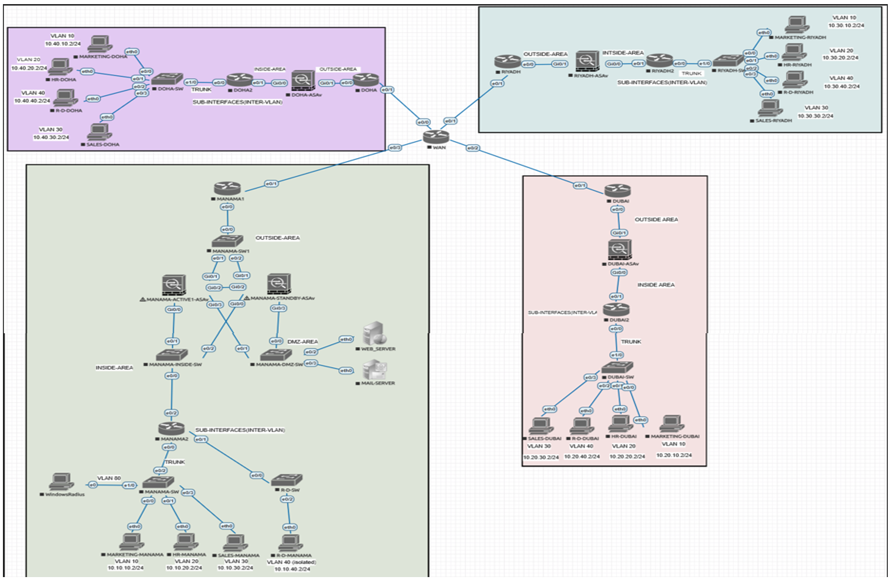
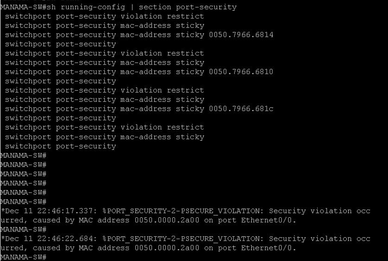
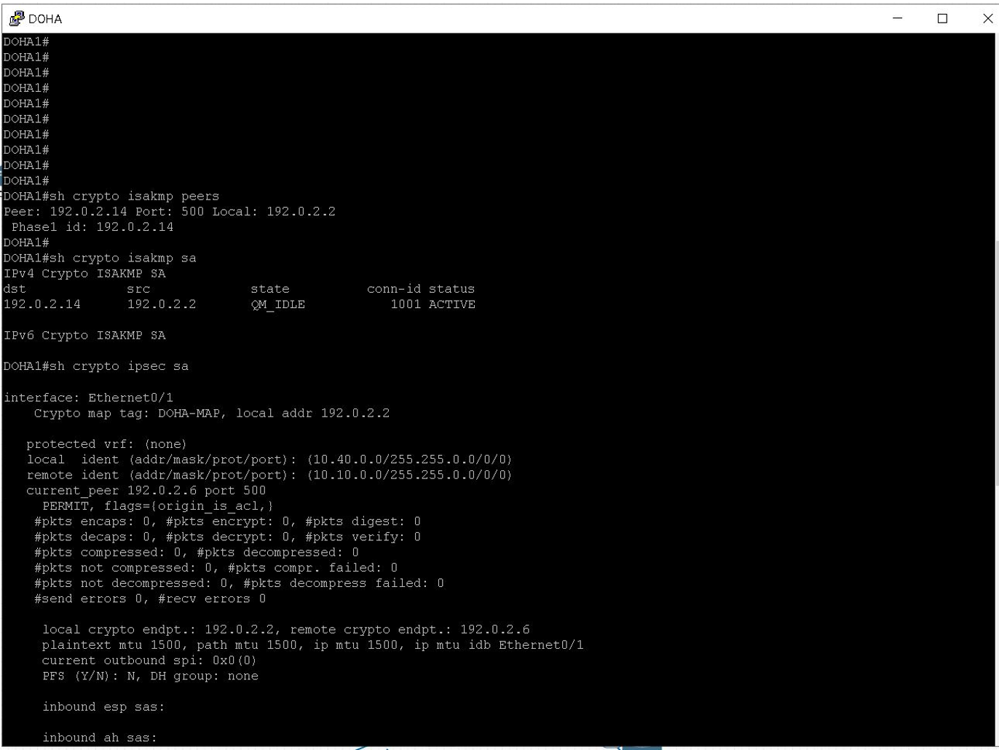
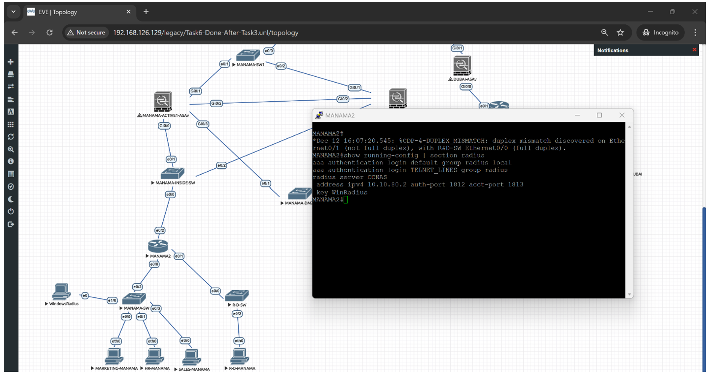

What the project set out to do
Design a multi-branch enterprise network that stays available and secure under real failure and attack conditions — not just one that passes a single connectivity test.
What I actually built
I led the network security implementation across a four-site topology spanning Manama, Dubai, Riyadh, and Doha. I configured multi-zone Cisco ASAv firewalls in an Active/Standby HA cluster, enforced inter-departmental ACLs, and deployed automated DDoS mitigation against embryonic SYN floods. I also integrated Layer 2 defenses — DHCP Snooping, Dynamic ARP Inspection, Port Security — and stood up a centralized WinRadius AAA server for least-privilege remote access.
Documentation on file
100+ figures: full EVE-NG topology layouts, subnet schemes, DHCP snooping binding tables, live Port Security violation logs, active VPN tunnel states, and RADIUS authentication readouts.

EVE-NG topology layout
Port Security violation log
IPsec VPN tunnel state
RADIUS Auth